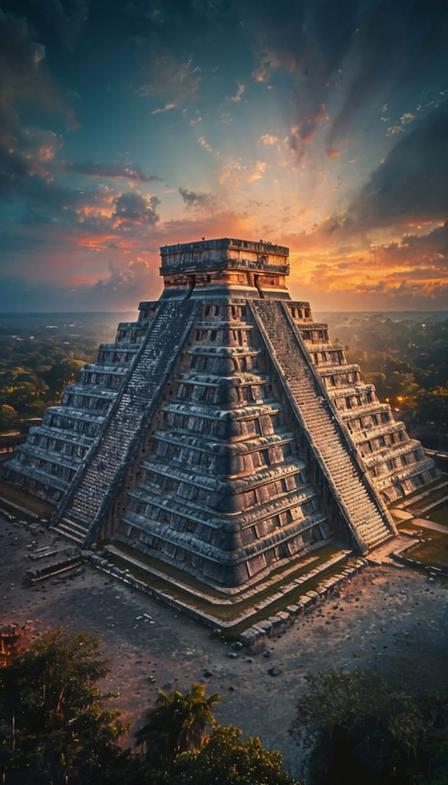
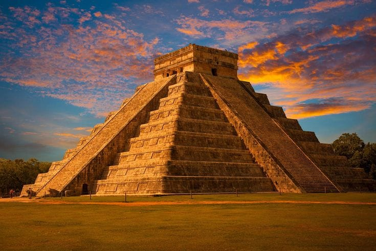
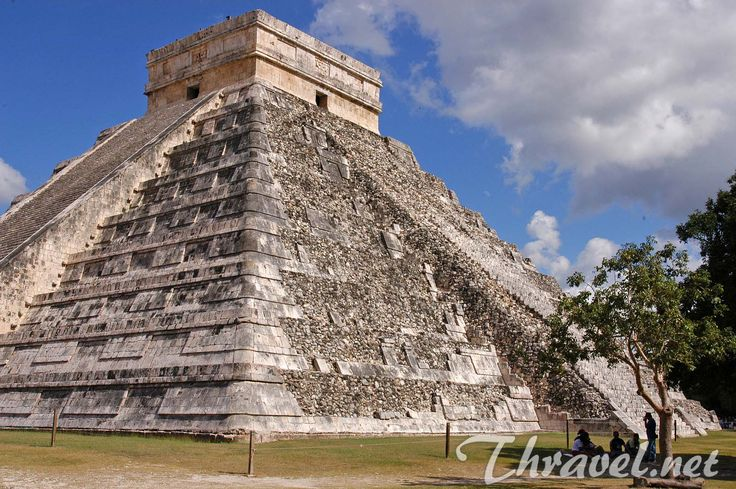
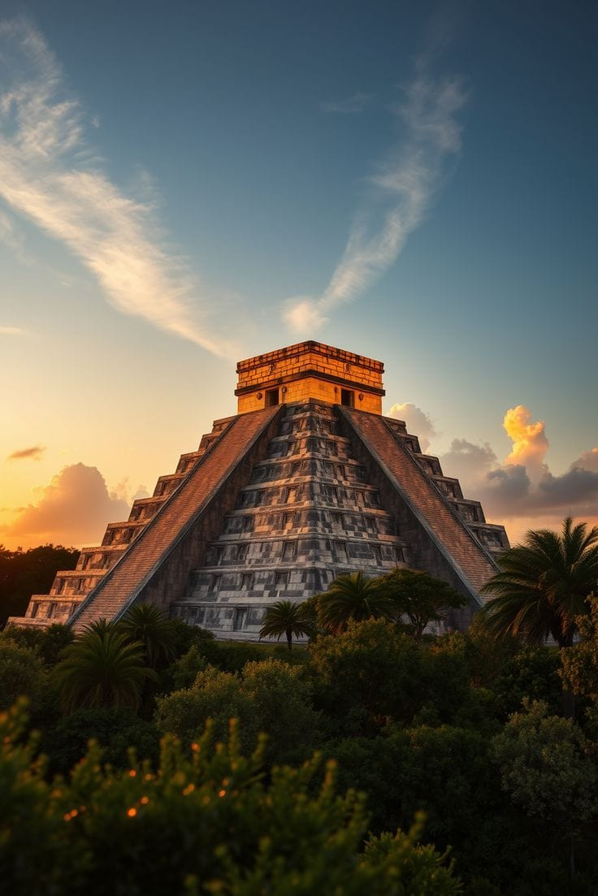

تُعد مدينة تشيتشن إيتزا واحدة من أعظم المدن الأثرية التابعة لحضارة المايا القديمة، وتقع في شبه جزيرة يوكاتان بالمكسيك. كانت المدينة مركزًا سياسيًا ودينيًا وثقافيًا مهمًا، وشهدت ازدهارًا كبيرًا منذ مئات السنين. تشتهر المدينة بهرم "إل كاستيلو" الشهير، وهو معبد ضخم يتميز بتصميم هندسي ودقة معمارية مذهلة، حيث يعكس معرفة شعب المايا بعلم الفلك والرياضيات. بُني الهرم بطريقة تجعل أشعة الشمس أثناء الاعتدال تُكوّن ظلًا يشبه الأفعى المتحركة على درجاته، وهو ما يُعد من أعظم الإنجازات المعمارية القديمة. تضم تشيتشن إيتزا العديد من المعابد والساحات والملاعب الحجرية التي كانت تُستخدم في الطقوس والاحتفالات الدينية والألعاب التقليدية الخاصة بحضارة المايا. تتميز المدينة بتاريخها الغامض وثقافتها الفريدة، وقد أُدرجت ضمن قائمة التراث العالمي لليونسكو، كما تم اختيارها ضمن عجائب الدنيا السبع الجديدة تقديرًا لقيمتها التاريخية والحضارية الهائلة.